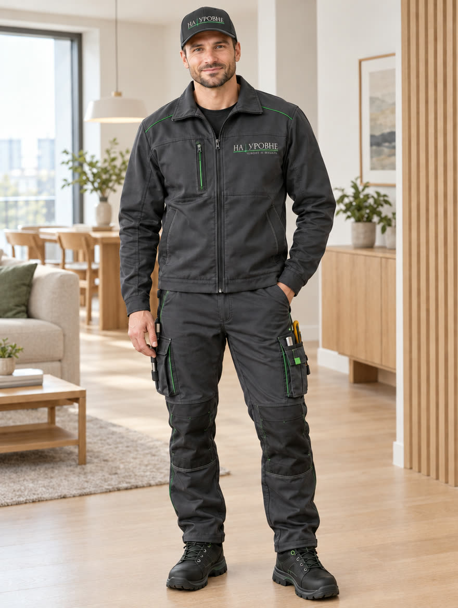
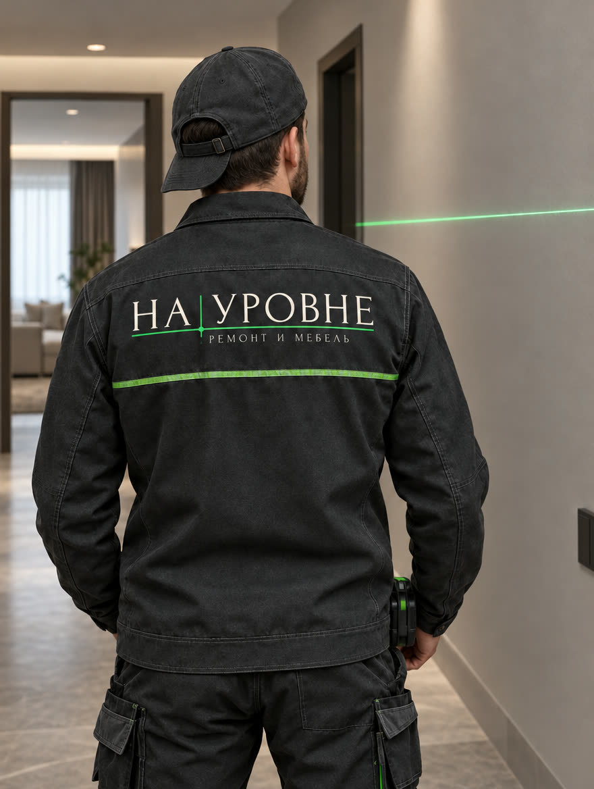
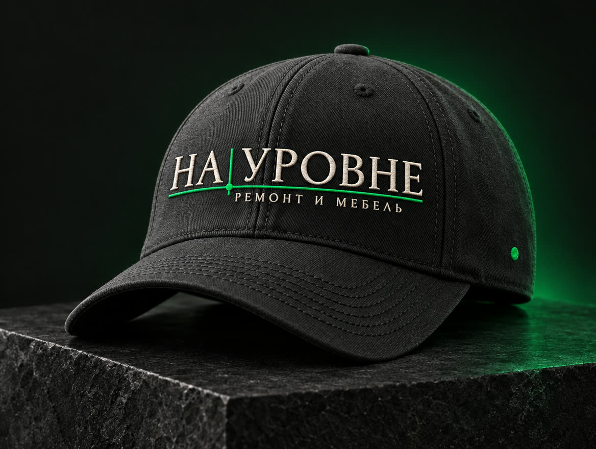
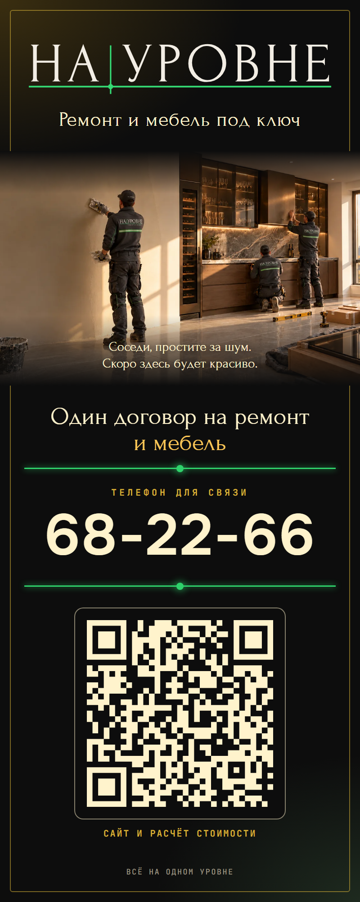
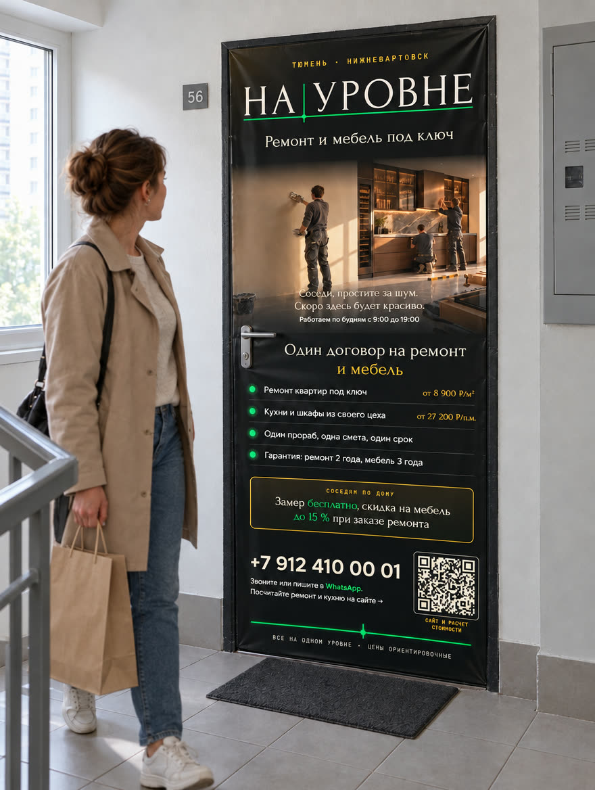

Графитовая роба с тонким зелёным кантом и графитовая кепка. Логотип «НА|УРОВНЕ» с подписью «РЕМОНТ И МЕБЕЛЬ» под лазерной линией: название вышито кремовой нитью, линия — зелёной. На спине крупный логотип и светоотражающая зелёная полоса: это и бренд, и безопасность на объекте.

Мастер в формеЛоготип на кепке спереди и на груди слева (ширина вышивки на груди 9 см, чтобы подпись читалась). Зелёный кант на плечах и карманах повторяет лазерную линию.

Вид со спиныКрупный логотип на спине и светоотражающая полоса. Бригаду узнают в подъезде и во дворе.

КепкаОбъёмная вышивка спереди, зелёная точка на боку. Её же можно дарить клиентам и партнёрам.
НА УРОВНЕ · логотип для формы и печати
Логотип с подписью «РЕМОНТ И МЕБЕЛЬ»
Подпись стоит под лазерной линией и начинается от точки пересечения. Она мельче названия и не спорит с ним, но читается. Логотип в кривых, его можно вышивать и печатать любого размера.
КепкаВышивка спереди, ширина 10–11 см. Название кремовой гладью, линия и точка зелёной нитью, подпись тонкой кремовой нитью.
ГрудьСлева, ширина 9 см: меньше подпись «РЕМОНТ И МЕБЕЛЬ» уже не прочитать.
СпинаШелкография или термоперенос, ширина 28–30 см. Под логотипом светоотражающая зелёная полоса.
НА УРОВНЕ · реклама на объекте
Баннер на дверь квартиры, 80 × 200 см

Пока идёт ремонт, баннер закрывает входную дверь квартиры. Его каждый день видят все соседи по подъезду, а это лучшие будущие клиенты: у них такие же квартиры и тот же дом.
Что на баннереЛоготип и города, фото «ремонт + сборка кухни», главное преимущество «один договор на ремонт и мебель», цены «от», гарантии, предложение соседям, телефон, WhatsApp и QR-код на сайт с расчётом стоимости.
Вежливость к соседям«Соседи, простите за шум. Скоро здесь будет красиво» и часы работ. Снимает раздражение и вызывает симпатию к компании.
ПредложениеСоседям по дому: замер бесплатно и скидка на мебель до 15 % при заказе ремонта.
ПечатьБаннерная ткань или винил 80 × 200 см, крепление на скотч или магниты, снимается без следов. Макет в PDF, печать полноцвет. QR ведёт на сайт: после подключения своего домена QR нужно перевыпустить.

Так баннер выглядит в подъездеВизуализация на двери квартиры, где идёт ремонт.